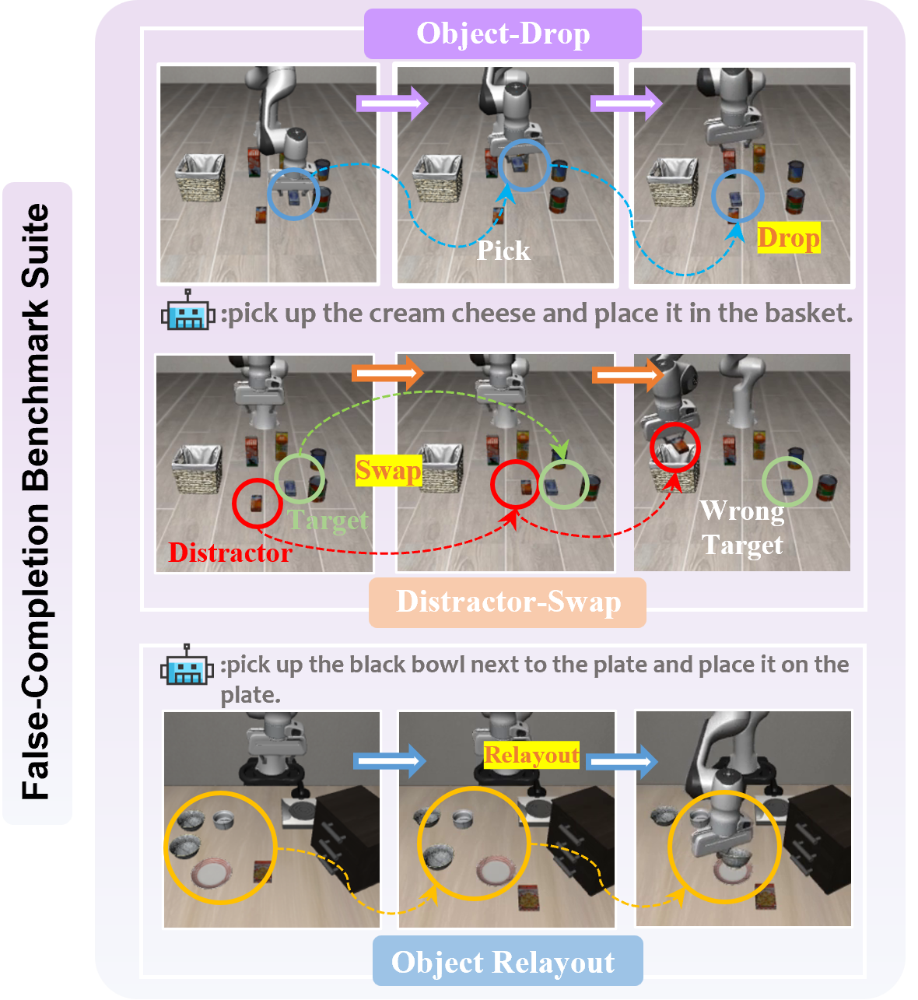

Vision-Language-Action (VLA) models have advanced robotic manipulation by combining vision, language, and proprioception to predict actions. However, previous methods fuse proprioceptive signals directly with vision-language features, resulting in state-dominant bias and false completion despite visible execution failures. We systematically analyze this failure mode, attributing it to modality imbalance, where policies overly rely on internal state progression and underuse visual evidence.
To address this, we introduce the first False-Completion Benchmark Suite, featuring eight tasks with three controlled perturbations (Object Drop, Distractor Swap, Relayout) to comprehensively evaluate false completion.
Moreover, we propose ReViP, a novel VLA framework with Vision-Proprioception Rebalance to enhance visual grounding and robustness under perturbations. The key insight is to introduce auxiliary progress-aware visual cues to adaptively modulate the coupling between semantic perception and proprioceptive dynamics. Specifically, progress-aware visual cues are extracted by an external Task-Stage Observer, which performs task-relevant reasoning on real-time observations to drive task-stage feature-wise linear modulation, enhancing environmental awareness and mitigating state-driven errors.
Extensive experiments show that ReViP effectively mitigates false completion and improves success rates over strong VLA baselines, achieving a 26% gain over π0 model on our suite, with gains extending to LIBERO, RoboTwin 2.0, and real-world evaluations.
✕No Back to Oject
Butter->Baket
✕No Back to Oject
Orang Juice->Baket
✕No Back to Oject
Cream Cheese->Baket

Object Drop
Tests whether a model can detect unexpected execution-time failure, recover the object, and regrasp instead of blindly continuing the original plan.
Distractor Swap
Stresses instance-level visual grounding by swapping target and distractor poses while keeping language fixed.
Relayout
Breaks demonstration-specific spatial priors and requires policies to adapt to new target-goal layouts from current visual observations.
Object Drop
Butter->Baket
Distractor Swap
Butter->Baket
Object Drop
Salad dressing->Baket
Object Drop
Similar Distractor
Small-Object Distractor
Long-Horizon Task
@article{li2026revip,
author = {Zhuohao Li and Yinghao Li and Jian-Jian Jiang and Lang Zhou and Tianyu Zhang and Jiadong Yin and Mu Lin and Yi-Lin Wei and Wei-Shi Zheng},
title = {ReViP: Mitigating False Completion in Vision-Language-Action Models with Vision-Proprioception Rebalance},
journal = {arXiv preprint arXiv:2601.16667},
year = {2026}
}